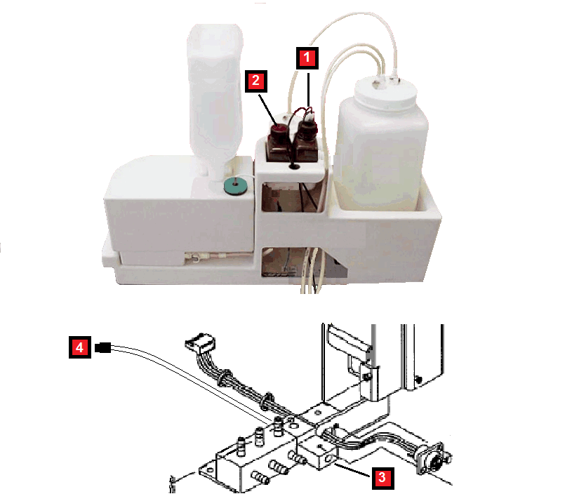
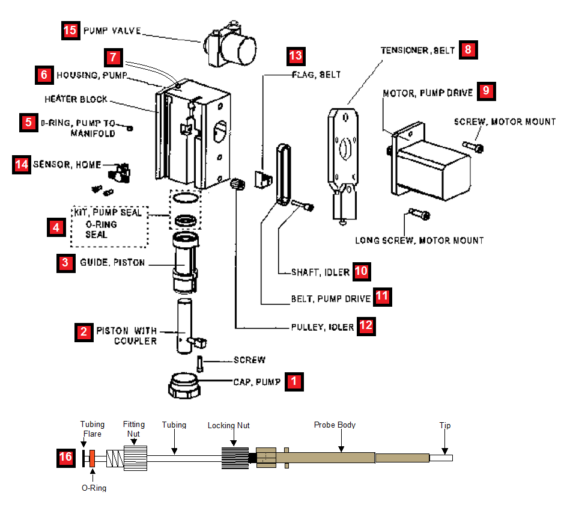
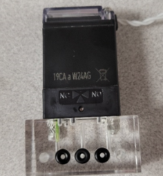
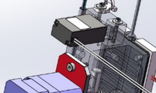

Substrate System
Illustrated Parts List
- Substrate Cap assembly
- Substrate Bottle
- Substrate Bulkhead Fitting
- Tubing
- Substrate Pump
- Substrate Probe

| Item | Description | Order Number | Notes |
|---|---|---|---|
| 1 | ASSY, CAP, SUBSTRATE | B34435 |
Cap, Substrate, Assy, Unibase (Includes Tubings, CnS fittings, fitting lock, no Check Valve) 
|
| Not Shown | VALVE, CHECK, MINIATURE | 78192 |
Valve, Check, Substrate (Used on Unibase Tray) Only for older Substrate Cap Assembly. |
| 2 | ACCESS SUBSTRATE 4 X 130ML | 81906 | Substrate, 4 bottles, 130ml/bottle |
| 3 | BULK HEAD FITTING SUBSTRATE | 84891 |
Bulkhead Fitting, Substrate, black plastic This is the black plastic bulkhead fitting that connects the substrate bottle tubing to the substrate pump tubing through the left side of the instrument. On very old Rev B instruments substrate was part of the bulk fluids manifold (4 ports). The newer bulk fluids manifold 77593 does not include a substrate fitting (3 ports). |
| 4 | TUBE, SUBSTRATE OFF-BOARD | 83392 |
Tubing, Black, Bulkhead Manifold to Substrate Valve (Substrate) Tubing with .060" THICK WASHER |

| Item | Description | Order Number | Notes |
|---|---|---|---|
| 1 | CAP, SUBS PUMP | 75642 | Nut, Black, Plastic, Pump, Substrate, Lower. Not in CARE Kit. |
| 2 | ASSY, 2ML PISTON | 79613 | Piston, Pump, Substrate (With Guide Pin) |
| 3 | GUIDE, SUBSTRATE PUMP PISTON | 75587 | Guide, Pump, Piston, Substrate
Replaced by C13357. |
| GUIDE, SUBSTRATE PUMP PISTON | C13357 | Guide, Pump, Piston, Substrate
Replaces 75587 at stockout. |
|
| 4 | ASSY, SEAL/O-RING, SUB, FS | 81092 | Seal & O-Ring Kit, Pump, Substrate, Medical Grade (MSQ=1) |
| Not Labeled | FST, O-RING | 77302 | O-Ring, Pump, Substrate, Piston |
| 5 | O-RING, 3 WAY VALVE | 85411 | O-Ring, Valve, Substrate (Seals Fluid Connections Between Substrate Pump & Valve) |
| 6 | Housing, Substrate Pump | 2-007769-5 | Acrylic pump housing only, does not include pump components. |
| Not Shown | INSULATION, SUBSTRATE | 77623 | Substrate heater insulation (white). |
| Not Shown |
HEATER,ASSY,SUBST,TERM |
01-007940B |
Terminated substrate heater assembly. Attached to substrate heat sink. Not orderable. |
| Not Shown |
SUBSTRATE HEATSINK |
02-007761-4 |
Substrate heat sink (black). Attached to the substrate heater. Not orderable. |
| 7 | ASSY, THERM, 10-32 STUD, 14 INCH RoHS | 6711B | Thermistor, Universal, (Incubator, RV, Substrate) RoHS |
| 8 | TENSIONER, MOTOR MOUNTING BRACKET | A52044 | Added to pump for belt reliability. |
| 9 | ASSY, GEAR MOTOR Substrate and Wash RoHS | B48013 | Motor, Drive, Pump, Wash or Substrate (With Gear Attached) RoHS. Replaces 74833. |
| 10 | SHAFT, PULLEY, PUMP | 75272 | Shaft, Pulley, Idler for Precision, Wash, or Substrate Pump |
| 11 | FST, BELT, TIMING | 75373 | Belt, Pump, Wash or Substrate (MSQ=1)
REPLACE with part number A36206. |
| Urethane Pump Belt, 50 Teeth [Urethane - Grey] | A36206 | Belt, Pump, Wash or Substrate (MSQ=1)
[Urethane Belt requires Part# C65238 - Flag Belt Clip for Substrate Pump Belt Only] |
|
| 12 | Pulley, Idler, Aluminum | A95535 | Pulley, Idler, Pump (Precision, Wash, & Substrate) |
| 13 | BELT, CLIP, FLAG, SUBSTRATE | 80583 | Flag, Home, Pump, Substrate, Belt Clip - For Neoprene Belts Only (Black) |
| BELT FLAG, SUBSTRATE, URETHANE BELT | C65238 | Flag, Home, Pump, Substrate, Belt Clip - For Urethane Belts Only (Grey) | |
| 14 | ASSY, OPT SENSOR, 8-INCH, W-TYPE, RoHS | 7879B | Sensor, Home for Wash, Substrate, and Precision Pump, Peristaltic Pump, 8" Long |
| 15 | ASSY, SOL VALVE, 3-WAY RoHS | 78831 | Replaced by D15548 at stockout.
Valve, Substrate (MSQ=1) RoHS. |
| FS Kit, A2 Substrate Valve Assy | D15548 |
Replaces 78831 at stockout. Valve, Substrate (MSQ=1) RoHS. Kit includes screws and o-rings. Note: Order PN A81682 (O-Ring, Substrate Pump/Valve Manifold, Kit) if replacement o-rings are needed for D15548. A81682 comes with three o-rings that are compatible with D15548, but not compatible with 78831.   |
|
| 16 | ASSY, SUBSTRATE PROBE | 7143C | The clear tubing must extend exactly 0.3 inches beyond the probe body (light brown). The locking nut should be tight, but not over-tightened so as to crimp or kink the tubing |
| Not Shown | TYBE 3/8" OD PLSTC 1 1/2 | 7784A | This is the tube that the substrate probe is shipped in. |
| Description | Order Number | Notes |
|---|---|---|
| Pump, Substrate, Assy, Boxed & Tested RoHS | B94919 | Does not include substrate probe. Replaces 77133. |
Edit Log
- 07/21/2016 THX - New format release.
- 04/24/2019 THX - Added new substrate piston guide part#.
- 11/27/2019 THX - Removed obsolete parts.
- 7/01/2020 THX - Added substrate insulation part number and heater note.
- 7/13/2021 THX - Added substrate pump urethane belt and flag.
- 4/4/2024 DJP - Updated components related to substrate pump heating.
- 8/28/2025 DJP - Use "Order Number" heading. Use "Order Number" heading. Add substrate valve PN D15548.
- 12/12/2025 DJP - Added details for replacement o-rings on D15548.